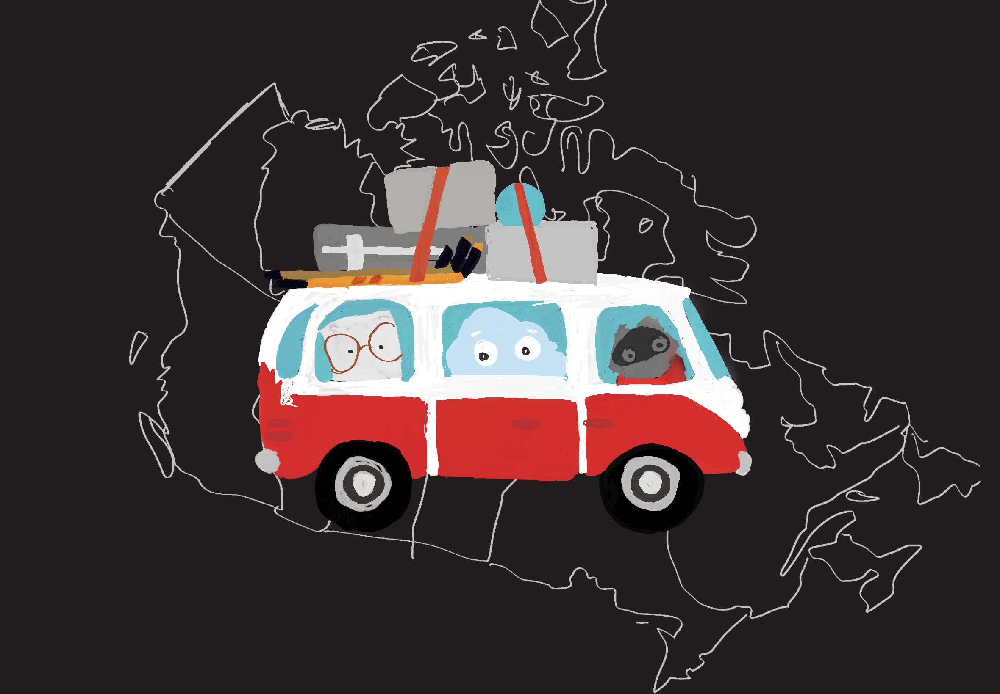
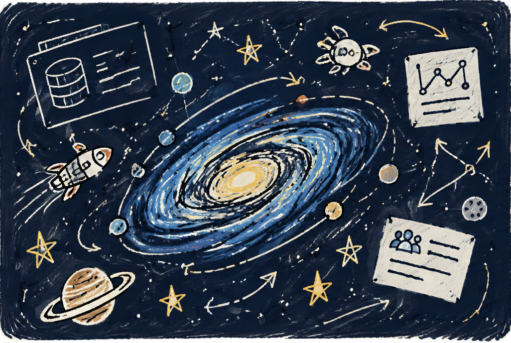
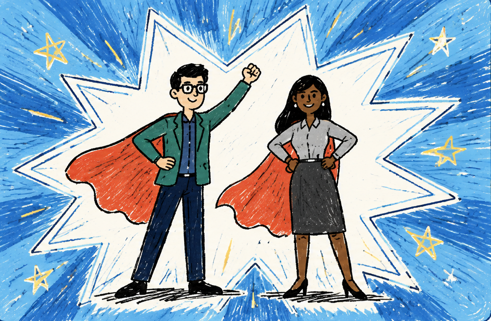

Building Communities That Build Themselves
Creating training, resources, and experiences that helped student leaders build stronger technical communities of their own.
Every project has a story. These are a few of the ones that stayed with me.
Creating training, resources, and experiences that helped student leaders build stronger technical communities of their own.
Bringing Auth0 into Hacktoberfest and creating more ways for developers to contribute to our open source projects.

Anyone can host an event online. The challenge is recreating the energy of an in-person meetup. Something people are genuiely excited to attend.

A complex product, a sales team that needed to get up to speed quickly, and little time to do it.

DevHeroes started as an experiment in earning trust and celebrating developers. Not just for what they built, but for how they helped others succeed.